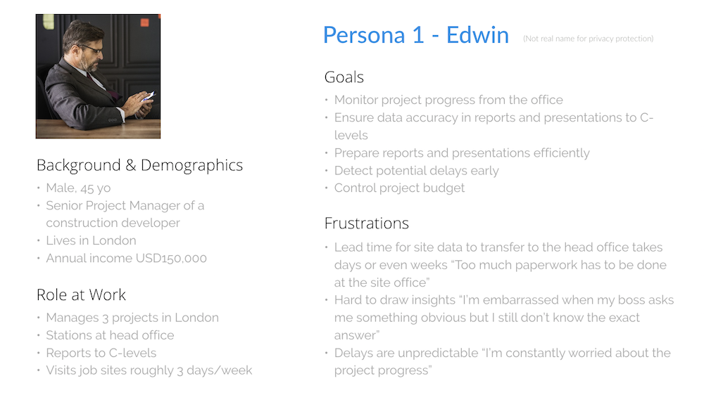

BUSINESS CASE
SnagR is a B2B software company. There's only one main product for them to sell, namely the SnagR system. It's a construction project management software, which targets middle- to high-level management people in the industry.

It's very important to know your audience when constructing a content strategy. A guy in management level is very different from the guy on the construction site. Despite of the fact that the worker is your acutal user, when creating your content strategy, you're speaking to the decision maker. Be sure to convey the benefits of your product to the manager.
COMPETITOR ANALYSIS
There aren't many big players in the market of construction project management software, the largest being Procore and Aconex. But there are quite a handful of smaller players who may be new or old to this industry. Identify your competitors, and define your own value proposition against theirs. The starting point can be studying their corporate website.

AUDIENCE PERSONA
It's time to put yourself into your audience's shoes. Create personas for every type (or at least the majority) of your users. What keeps them up at night, and what motivates them during the day, what stories do they relate themselves to, what are their core values?
Speak to your existing or potential clients. Make sure your know their industry, their current painpoints, what they'd like to archieve, their industry jargons, etc.
BRAND STORY
Branding can be as powerful as religion, if done right. Nobody wants to learn a list of features of your product, but humans are naturally drawn to stories - so stop selling WHAT you're selling, and start selling WHY you're selling. Always wrap your marketing contents around with a consistent and compeling brand story. Humanise your brand. It is the connection between the audience and the brand that gets their attention.
Here's the story of SnagR :-
As an Architect, Graham Henderson, SnagR's Founder / CEO, was frustrated with the then construction industry relying heavily on labor-intensive manual tasks which could actually be replaced by tech automation. His mission was to revolutionise the way the construction industry worked. Also trained in computer programming, he developed a preliminary mobile application which became the conceptual prototype of SnagR.

Think Apple by Steve Jobs and Tesla by Elon Musk - they are both visionary creators as well as the world's greatest marketers. They do not simply produce products, but they define the brands, customers and supporters with their own personalities. By holding an iPhone, you become a trendsetter; by driving a Tesla, you are associated with 'ambitious', 'environmental-friendly', 'energetic', 'smart' etc. It's often the easiest to humanize a brand by actually using a human-being as the face of the company.
Procore, one of the major SnagR's competitors, tells a compelling brand story with the CEO being the face of the company.
You speak in a different tone to your friends, family and colleagues, but you're still you under any circumstance. Your brand should too - the level of formality can differ but it should maintain a consistent personality.
CHANNEL PLAN
The last step of content strategy is to design a channel plan. Since I'm currently coordinating most of the company's marketing efforts, it's frankly quite challenging to update everything as frequent as it's supposed to. However, drafting a plan is still needed as you'll know how much the reality is skewed away from it.
As a starter, I've made this video as a means of introducing what SnagR does, available on the website and widely used in first sales meetings and exhibitions.
For online channels :-
- Company website - a total revamp from content, design to coding, and write case studies and new feature releases roughly bi-weekly (I also conduct regular experiments to improve site performance);
- Company blog - created from scratch and update it weekly;
- Social media - managing the company LinkedIn and Twitter accounts
- SEO & ASO audit - including data analysis, keyword mining, content creation and experience optimisation
For offline channels :-